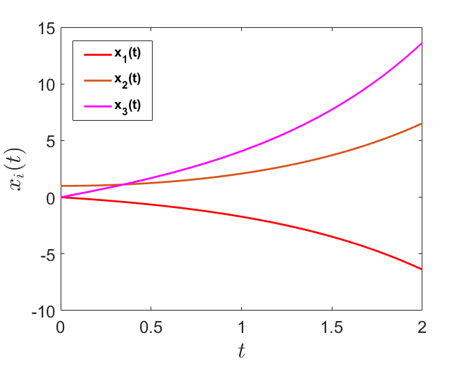

Jonathan Crofts
Nottingham Trent University
Consider the $n$ by $n$ Jordan block
\[ J_n(\lambda) = \begin{bmatrix}\lambda &1&0&\cdots &0&0\\ 0& \lambda &1&\cdots &0&0\\ 0&0&\lambda &\ddots &0&0\\ \vdots &\vdots&\vdots&\ddots&\ddots&\vdots\\ 0&0&0&\cdots&\lambda&1\\ 0&0&0&\cdots&0&\lambda\end{bmatrix} = \lambda I_n + K \]where
\[ K = \begin{bmatrix}0&1&\cdots&0\\\vdots&\ddots&\ddots&0\\ 0&\cdots &0&1\\0&0&\cdots&0\end{bmatrix} = \begin{bmatrix}0&I_{n-1}\\0&0\end{bmatrix}\in\mathbb{R}^{n\times n} \]For such a block
\[ \begin{align*} J_n^r &= \left(\lambda I_n+K\right)^r\\ &=\lambda^rI_n+r\lambda^{r-1}K+\frac{r(r-1)}{2}\lambda^{r-2}K^2+\cdots+K^r\\ &= \sum_{s=0}^r {r\choose s}\lambda^{r-s}K^s \end{align*} \]This follows via application of the Binomial theorem
\[ (x+y)^n = \sum_{k=0}^n {n \choose k}x^{n-k}y^k\quad\text{where}\quad {n\choose k} = \frac{n!}{(n-k)!k!} \]Now it can be shown that
\[ K^r = \begin{bmatrix}0&I_{n-r}\\0&0\end{bmatrix} \quad \text{(exercise)} \]For $r < n $ and $\displaystyle K^r=0$ if $r\geq n$
Assuming $r\geq n$ we can rewrite: $\displaystyle\quad J_n^r(\lambda) = \sum_{s=0}^r {r\choose s}\lambda^{r-s}K^s = \sum_{s=0}^{n-1} {r\choose s}\lambda^{r-s}K^s$
And so
\[ \begin{align*} J_n^r(\lambda)&=\sum_{s=0}^{n-1} {r\choose s}\lambda^{r-s}K^s\\ &=\begin{bmatrix}1&&&\\&1&&\\&&\ddots&\\&&&1\end{bmatrix}\lambda^r+ \begin{bmatrix} 0 & 1 & \cdots & 0\\ \vdots& \ddots &\ddots & 0\\ 0 & \cdots &0 & 1\\ 0 & 0& \cdots &0 \end{bmatrix}{r \choose 1}\lambda^{r-1}+\cdots\\ &+\begin{bmatrix}0&\cdots&0&1\\ 0&\cdots&0&0\\\vdots&&\vdots&\vdots\\ 0&\cdots&0&0\end{bmatrix}{r\choose n-1}\lambda^{r-n+1} = \color{red}{\boxed{\color{white}{ \begin{bmatrix}\lambda^r&{r\choose 1}\lambda^{r-1}&\cdots&\cdots&{r\choose n-1}\lambda^{r-n+1}\\ 0&\lambda^r&{r\choose 1}\lambda^{r-1}&&\vdots\\ \vdots&&\ddots&\ddots&\vdots\\ \vdots&&&&{r\choose 1}\lambda^{r-1}&\\ 0&\cdots&\cdots&0&\lambda^r \end{bmatrix} }}} \end{align*} \]Let $n=4$ then
\[ J_4(\lambda) = \begin{bmatrix}\lambda^r&{r\choose 1}\lambda^{r-1}&{r\choose 2}\lambda^{r-2}&{r\choose 3}\lambda^{r-3}\\ 0&\lambda^r&{r\choose 1}\lambda^{r-1}&{r\choose 2}\lambda^{r-2}\\ 0&0&\lambda^r&{r\choose 1}\lambda^{r-1}\\0&0&0&\lambda^r \end{bmatrix} \]So, for example
\[ \left(J_4(2)\right)^5 = \begin{bmatrix}32&80&80&40\\0&32&80&80\\0&0&32&80\\0&0&0&32\end{bmatrix} \]This follows since $\displaystyle{5\choose 1}=5$ and $\displaystyle {5\choose 2}={5\choose 3}=10$
Given these results we compute powers of Jordan matrices since if
\[ J = \begin{bmatrix}J_{n_1}&&&\\&J_{n_1}&&\\&&J_{n_1}&\\&&&J_{n_1}\end{bmatrix} \implies J^r = \begin{bmatrix}J_{n_1}^r&&&\\&J_{n_1}^r&&\\&&J_{n_1}^r&\\&&&J_{n_1}^r\end{bmatrix} \]i.e. we just compute the powers of the individual Jordan blocks
From the above we observe the following properties
Let
\[ J = \begin{bmatrix}J_1(2)&&\\&J_2(3)&\\&&J_3(4)\end{bmatrix} = \begin{bmatrix}2&&&&&\\&3&1&&&\\&0&3&&&\\&&&4&1&0\\&&&0&4&1\\&&&0&0&4\end{bmatrix} \]Then since
\[ J_1(2)^3=8\quad J_2(3)^3=\begin{bmatrix}3&1\\0&3\end{bmatrix}^3=\begin{bmatrix}27&3\cdot 3^2\\0&27\end{bmatrix}=\begin{bmatrix}27&27\\0&27\end{bmatrix} \]And
\[ J_3(4)^3=\begin{bmatrix}4&1&0\\0&4&1\\0&0&4\end{bmatrix}^3=\begin{bmatrix}64&3\cdot 4^2&3\cdot 4\\0&64&3\cdot 4^2\\0&0&64\end{bmatrix} =\begin{bmatrix}64&48&12\\0&64&48\\0&0&64\end{bmatrix} \]We have that
\[ \color{red}{\boxed{\color{white}{ J^3 = \begin{bmatrix}8&&&&\\&27&27&&\\&0&27&&\\&&64&48&12\\&&0&64&48\\&&0&0&64\end{bmatrix} }}} \]This will be extremely usefulwhen solving systems of difference equations later on in the course
We wish to solve
\[ \color{red}{\boxed{\color{white}{ \frac{\mathrm{d}\mathbf{x}}{\mathrm{d}t} = A\mathbf{x}\quad \mathbf{x}(0)=\mathbf{x}_0 }}} \]As we know, one way to do this is via a similarity transformation, i.e. setting
\[ \mathbf{y}=H^{-1}\mathbf{x}\quad\text{where}\quad A = HJH^{-1} \]So that
\[ \frac{\mathrm{d}\mathbf{y}}{\mathrm{d}t} = J\mathbf{y} = \begin{bmatrix}J_{n_1}&&&\\&J_{n_2}&&\\&&\ddots&\\&&&J_{n_k}\end{bmatrix} \mathbf{y}\quad \mathbf{y}(0)=H^{-1}\mathbf{x}_0 \]Alternatively, we could employ Laplace transforms
Recall that
\[ \mathcal{L}\left[\frac{\mathrm{d}\mathbf{x}}{\mathrm{d}t}\right] = s\bar{\mathbf{x}}-\mathbf{x}_0 \quad \text{and}\quad \mathcal{L}\left[A\mathbf{x}\right]=A\bar{\mathbf{x}} \]Thus our ODE becomes
\[ \frac{\mathrm{d}\mathbf{x}}{\mathrm{d}t} = A\mathbf{x}\quad \mathbf{x}(0)=\mathbf{x}_0 \longrightarrow \color{red}{\boxed{\color{white}{s\bar{\mathbf{x}}-\mathbf{x}_0 = A\bar{\mathbf{x}} }}} \]Or
\[ \begin{align*} (sI_n-A)\bar{\mathbf{x}} &= \mathbf{x}_0\\ \implies &\color{#00FF00}{\boxed{\color{white}{\bar{\mathbf{x}}= (sI_n-A)^{-1}\mathbf{x}_0}}} \end{align*} \]Pulling out a factor of $s$ gives
\[ (sI_n-A)^{-1} = \frac{1}{s}\left(I_n-\frac{1}{s}A\right)^{-1} \]Which can be expanded to give
\[ \begin{align*} \frac{1}{s}\left(I_n-\frac{1}{s}A\right)^{-1}&=\frac{1}{s}\sum_{r=0}^\infty \left(\frac{1}{s}A\right)^r\\ &=\sum_{r=0}^\infty \frac{1}{s^{r+1}}A^r \end{align*} \]The above power series converges if all eigenvalues of $\displaystyle\frac{1}{s}A$ are less than one in modulus
Recalling that $\displaystyle \mathcal{L}\left[t^r\right] = \frac{r!}{s^{r+1}}$
We see that
\[ \color{red}{\boxed{\color{white}{ \begin{align*} \mathcal{L}^{-1}\left[(sI_n-A)^{-1}\right] &=\sum_{r=0}^\infty \frac{t^r}{r!}A^r\\ &= e^{At} \end{align*} }}} \]This is the matrix exponential
To see how we arrived at the above note that
\[ \begin{align*} \mathcal{L}^{-1}\left[\sum\frac{1}{s^{r+1}}A^r\right]&=\mathcal{L}^{-1}\left[\frac{1}{s}I_n\right] +\mathcal{L}^{-1}\left[\frac{1}{s^2}A\right]+\mathcal{L}^{-1}\left[\frac{1}{s^3}A^2\right]+\cdots\\ &=\mathcal{L}^{-1}\left[\frac{1}{s}\right]I_n+\mathcal{L}^{-1}\left[\frac{1}{s^2}\right]A+\mathcal{L}^{-1}\left[\frac{2!}{s^3}\right]\frac{A^2}{2!}+\\ &=I_n+At+A^2\frac{t^2}{2!}+\cdots \end{align*} \]Putting this altogether we see that
\[ \color{red}{\boxed{\color{white}{ \mathbf{x}(t)=e^{At}\mathbf{x}(0) }}} \]Which is the familiar exponential solution but for systems
The matrix exponential is an example of a matrix function and is defined as follows
\[ \color{#00FF00}{\boxed{\color{white}{ \begin{align*} e^{At}&=I_n+At+\frac{A^2t^2}{2!}+\frac{A^3t^3}{3!}+\cdots\\ &=\sum_{r=0}^\infty \frac{A^rt^r}{r!} \end{align*} }}} \]Importantly if $A$ is diagonalisable then
\[ \begin{align*} e^{At}=\sum_{r=0}^\infty \frac{A^rt^r}{r!}&=\sum_{r=0}^\infty PD^rP^{-1}\frac{t^r}{r!}\\ &=P\left(\sum_{r=0}^\infty \frac{D^rt^r}{r!}\right)P^{-1}\\ &=P\begin{bmatrix}\sum\frac{\lambda_1^rt^r}{r!}&&\\&\ddots & \\ &&\sum\frac{\lambda_n^rt^r}{r!}\end{bmatrix} P^{-1}\\ &=P\begin{bmatrix}e^{\lambda_1t}&&\\&\ddots&\\&&e^{\lambda_nt}\end{bmatrix} P^{-1} = Pe^{Dt}P^{-1} \end{align*} \]Thus given the eigenvalue-eigenvector decomposition of a matrix it is a simple task to compute the matrix exponential
Using the matrix exponential solve the system
\[ \frac{\mathrm{d}\mathbf{x}}{\mathrm{d}t} = A\mathbf{x}\qquad \mathbf{x}(0)=\begin{bmatrix}1\\0\\0\end{bmatrix} \]Where
\[ A=\begin{bmatrix}0&1&1\\-1&-2&-1\\3&5&2\end{bmatrix}=PDP^{-1} \]With
\[ P=\begin{bmatrix}1&-1&1\\0&1&-1\\-1&-1&2\end{bmatrix}\quad P^{-1}=\begin{bmatrix}1&1&0\\1&3&1\\1&2&1\end{bmatrix} \quad\text{and}\quad D=\begin{bmatrix}-1&0&0\\0&0&0\\0&0&1\end{bmatrix} \]We need to compute $e^{At}$
\[ \begin{align*} e^{At} &=Pe^{Dt}P^{-1}\\ &=\begin{bmatrix}1&-1&1\\0&1&-1\\-1&-1&2\end{bmatrix}\begin{bmatrix}e^{-t}&&\\&1&\\&&e^{t}\end{bmatrix}\begin{bmatrix}1&1&0\\1&3&1\\1&2&1\end{bmatrix}\\ &=\begin{bmatrix}1&-1&1\\0&1&-1\\-1&-1&2\end{bmatrix}\begin{bmatrix}e^{-t}&e^{-t}&0\\1&3&1\\e^t&2e^t&e^t\end{bmatrix} = \color{red}{\boxed{\color{white}{ \begin{bmatrix}e^{-t}-1+e^t&e^{-t}-3+2e^t&e^t-1\\1-e^t&3-2e^t&1-e^t\\2e^t-1-e^{-t}&4e^t-3-e^{-t}&2e^t-1\end{bmatrix} }}} \end{align*} \]Thus
\[ \mathbf{x}(t) = e^{At}\mathbf{x}_0 = \begin{bmatrix}e^{-t}-1+e^t&e^{-t}-3+2e^t&e^t-1\\1-e^t&3-2e^t&1-e^t\\2e^t-1-e^{-t}&4e^t-3-e^{-t}&2e^t-1\end{bmatrix} \begin{bmatrix}1\\0\\0\end{bmatrix}= \color{#00FF00}{\boxed{\color{white}{ \begin{bmatrix}e^{-t}-1+e^t\\1-e^t\\2e^t-1-e^{-t}\end{bmatrix} }}} \]We plot the trajectories $x_1(t), x_2(t)$ and $x_3(t)$ below
The Matlab code for this figure is given below
>> t = linspace(0,2,1001);
>> plot(t,exp(-t)-1+exp(t))
>> hold on
>> plot(t,1-exp(t),'r')
>> plot(t,2*exp(t)-1-exp(-t),'m')
>> xlabel('$t$','FontSize',24,'Interpreter','latex')
>> ylabel('$x_i(t)$','FontSize',24,'Interpreter','latex')
>> box on